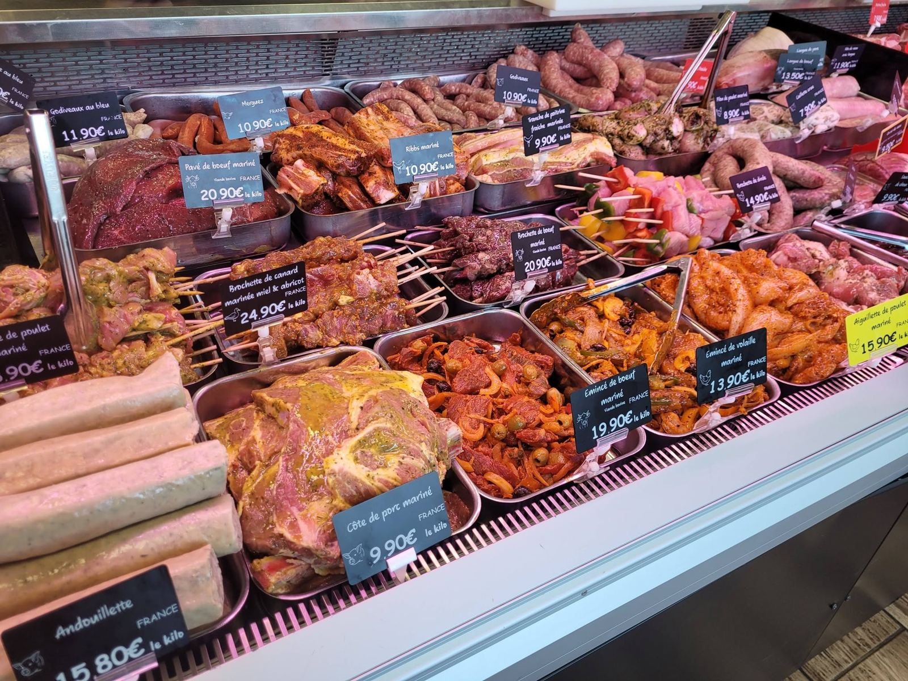
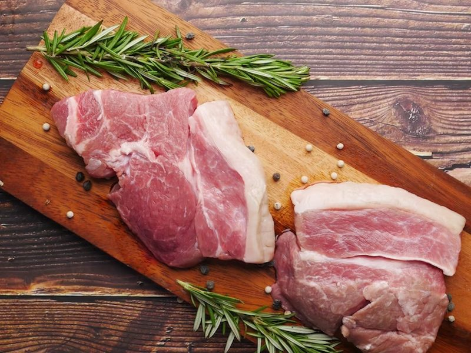

L'Étal
Le comptoir, pièce par pièce
Viande locale et régionale, découpée à la demande. Voici ce que vous trouverez au comptoir, et ce qu'on prépare pour vous sur commande.
Au comptoir
Une vitrine complète, du bœuf à la volaille
Chaque matin, l'étal est garni de viandes à griller, à rôtir ou à mijoter. Vous ne trouvez pas la pièce qu'il vous faut ? Demandez : on la prépare devant vous, à l'épaisseur et au poids voulus.
Les étiquettes de la vitrine indiquent l'origine et le prix au kilo de chaque produit.

Nos rayons
ce que l'on travailleViande bovine
Bœuf
- Côte de bœuf et entrecôte
- Faux-filet, rumsteck, bavette
- Rôti, pot-au-feu, bourguignon
- Steak haché minute
Viande de veau
Veau
- Escalopes, côtes, rôti
- Blanquette et sauté
- Roulés de veau de la maison
- Ris de veau sur commande
Viande porcine
Porc
- Côtes, échine, filet mignon
- Rôti de porc Orloff
- Poitrine fraîche
- Saucisses et chair à saucisse
Viande ovine
Agneau
- Gigot sur commande
- Côtelettes et carré
- Épaule à rôtir
- Navarin
Volailles
Volailles
- Poulet, pintade, canard
- Volailles farcies maison
- Brochettes et émincés
- Volailles des fêtes Label Rouge
Fabrication maison
Charcuterie
- Saucisson maison
- Godiveaux nature et au bleu
- Andouillette, boudins
- Pâtés et terrines
Les marinades de la vitrine
prêtes pour le barbecuePrix au kilo relevés en vitrine, donnés à titre indicatif. Ils peuvent évoluer selon les arrivages et la saison.

Les spécialités d'Augustin
Ce qu'on vient chercher chez nous
- Les roulés de veauÀ la provençale, au bleu, aux cèpes, ou tomates séchées et chèvre.
- Le rôti de porc OrloffLard, fromage et tranches de porc, ficelé à la main, prêt à enfourner.
- Les volailles farciesFarcies avec notre farce de volaille maison, aux pruneaux ou aux champignons.
- Le saucisson maisonEt toute la charcuterie de fabrication artisanale.
- Les colis de viandeBœuf, veau, porc ou agneau en demi-gros, pour remplir le congélateur.